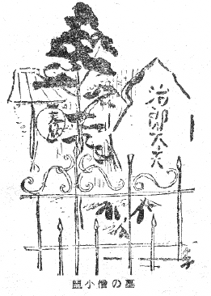
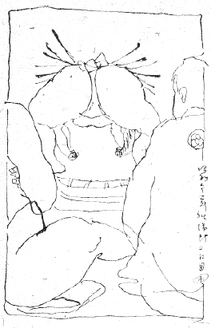
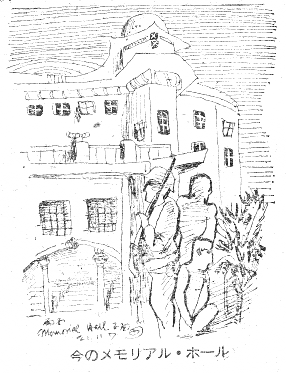
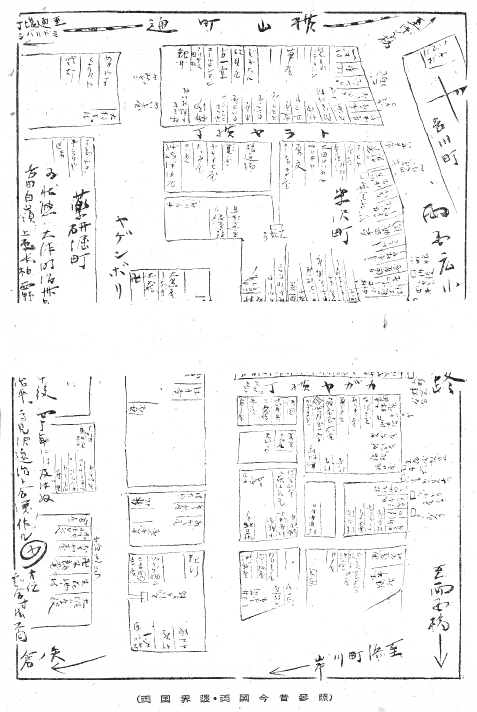

櫓太鼓にフト目をさまし、あすは……といふけれども、昔ぼくが成人した家は、風の加減で東から大川を渡つてとうとうと回向院の櫓太鼓が聞えたものだつた。ぼくの名は生れ落ちてからこれが本名であるが、この荘の字をよく人に庄屋の庄の字と間違へて書かれることがある。昔は川向うの行司木村庄某あてのハガキや手紙が番地が不完全だとぼくの家へ舞込むと同時に、ぼくへの通信がまた一応両国橋を向うへ渡つて附箋をつけて戻されたことなどあつた。両国はぼくの故郷である。
しかし近来の両国はぼくにとつては全く勝手のわからない、甚だ縁の遠いものになつてゐる。第一、自分があの地域のどの辺で生れたのか――ぼくは日本橋区吉川町一番地といふところで生れたのだが――現にあの辺へ行つて見ても、ほとんど見当が付かない。実はアハレないことにはそれでも多少は見当が付かうかと、性懲りもなく、今までに二三遍、浅草橋界隈を歩いて見たことがある。そのたんびに益々分らないのである。――近ごろでは東京の「両国」といふところは少々ぼくにとつて不愉快な存在の、どうでもいゝところになつて来た。
――それがやはり性根は故郷忘じ難しといふわけなんだらう。偶々筆を執つて「両国」を念頭にする、材料にするのは、私にとつてうれしいのだ。
この心持は果して何だらう？ たゞのセンチではないやうであるが、ひつきやう、自分の生活には過去も、現在も、未来も恐らく浸み透してゐる、生れた土地の記憶や実感。少くもぼくといふ人間はその実感を以て初めてジンセイといふ奴を呼吸した。その匂ひであらう――これがぼくをハウントするらしい。
この頃のやうな寒風のつのる日は、ぼくは昔から目の性がわるいのでボロボロ頬に涙を流しながら、しかし正月は凧といふ手があるので、朝起きて風さへ吹いてゐれば、決然としたものである。といつても、往来や広つぱで揚げる凧はぼく達には無く、足袋はだしで吹きつさらしの大屋根へ上つて揚げるのであるが、若し風が西で、吉川町からまつすぐ元柳町一帯の屋根々々を吹き越して回向院の方角へ向つてくれゝば、ぼくの凧は人家稠密の日本橋区から先きの打展いた本所区（大川の方）へ向つて飛揚するから、絶好のコンディションである。風がさうでないと、少し揚つても、忽ち電線に引かゝるか、または横山町辺の問屋町の屋上にはどの家にでもある針金の角を生やした大きな鬼瓦や、邪魔な物干しや、火の見に尻尾をとられて、面くらつて切れてしまふ。
ぼくは須賀町で巻骨の三枚半以上の武者絵の凧を買ふことを好んでは、これに大形のウナリとガンギリを付けて、尻尾は三間たち切りといふのを確か大人に教はつたまゝいつもその定法通りとした。あたじけないことだが、この巻骨の気負ひの凧がそのころ一円二十銭かで、何でも一式で、二円五十銭かゝつたおぼえがある。子供の二両二分は三ヶ日のおふくろに貰つたお年玉と、おばあさんの分と、炭屋のをぢさんの分、足袋屋のをぢさんの分、先づざつとこれだけの正月のみいりをフイにする勘定であつた。風の具合が悪くて、ぶつつり切れゝば、虎の子の二両二分はそのまゝ不人情に風のまにまにどこかの屋根裏か路地へ一瞬にして消えてしまふのだから、元々足場の悪い、屋根で揚げる凧は、切れたら最後と、いつも一期一会の張り切つた気組みだつた。
その自慢の巻骨がびゆうびゆう電線を吹き鳴らす寒風の中を、青空高く揚つて、だまを出し切つて、もうよく見えなくなつた八幡太郎の三人立ちなんかゞチンと冲天に澄んだ時に、凧はその長い二本の尾を、すいすいと静かに空中に垂らすのである。――こんな時には実際、助六のいひ草に安房上総が浮絵のやうに見えるといふけれども正にそんな溜飲の下がる心持がするので、ぼくの凧の天から微かにすいすいと垂らした細い二本の尻尾の真下に、くつきりと回向院の黒い大屋根があつて、角力ののぼりが何本もそのあたりに五色にかたまつて小さく見え、太鼓の櫓組がこれも小さくその傍らに見えるわけである。
回向院といへば昔は必ず沢山の鳩がゐたものであつたが、角力場の当時晴天十日といつた、コモと、丸太と、よしずと、綱の小屋がけには、木戸々々に板のわたりが地面に並べられて、しかしそれも芝居のやうには整然とせず、ぞんきに渡された、相当そこら中ぬかるみのある、ぎつくんばつたんする中を、たつつけを履いた細い足の茶屋のものが右往左往するし、のぼりは太いズンドの竹を荒繩であしらつてそこから高くそびえ、風にギーグーギーグー鳴りながら、はためいてゐる。丁度上等な昆布のやうな昔の純綿の幟りがばたばた、生きてゐるのである。
そんな音や風景の中に矢張り角力場は鳩がゐて、鳩もまた負けずにばたばた羽ばたいた記憶をもつてゐるのだが――近頃は鳩達もどうなつたかしらん。
回向院の本堂のわきには相当大きな黒い石で仏足石があつたやうにおぼえてゐる。――しかしこれはあるひは深川の浄心寺と記憶を混同してゐるかもしれないが、この石は表面がすべすべとして平らで、日が当ると、ホカホカしてとても温かつた――本堂までの正面見つきにはシヤモ屋のぼうずの通りからまつすぐずつと一列に石が敷いてあつて、からかねの露仏が左右一対に並び、本堂から回廊を渡つて、その先きが庫裡、その裏が墓場になつてゐた。向つて左手の露仏の片わきにはいつも真新しく太い立派な塔婆が立つて、そこに吊鐘が竹矢来の中に安置してあつたものである。――その辺が元は一帯に空地だつたのを国技館の敷地にしたものと思ふ。
今年（昭和十四年）春場所の初日（一月十二日）に、今いふ回向院の「正面見つき」のところをわざとまつすぐ通つて見ると、却つてこゝは今では回向院は頽れたまゝ、国技館からの裏口といつた、ゴミゴミした小路に零落してゐるが、左側の露仏は元通り恐らく元の位置に（？）あるやうである。それよりも盛観はこの小路せましと目白押しに並んだ自動車の堵列で、今年はそれが例年より少ないとはいつても、そのスマートに黒くあるひは青く水のやうに光る車の列の影に蹴おされて、小汚ない右手の渡廊下の奥の奥に、例の治郎太夫、鼠小僧の墓が――さういつてはこの侠盗の故人に気の毒ながら、先づ外後架といつた、むさくるしい感じに、辛くも残存するのを見た。しかしこの墓の囲ひに使はれてゐる鉄柵は、今になつて見ると、珍重すべき明治美術品の断片である。

鼠小僧の墓
八丁堀無宿次郎太夫事、次郎吉。天保年間の書きものゝ小書きに「深川辺徘徊博奕渡世致居候」とある名物男で、泉町の生れであつたから、いづみ小僧といつたのを動作が敏捷だつたので「ねずみ小僧」と転訛したものだらうといふ説は、正しいかどうか。なんでも二十九の頃から「盗賊相働き屋敷方奥向並長局金蔵等に忍入り」といふから、今の大衆ものゝ本家である。
「大名は九十五ヵ所右の内三四度も忍び入候処も有之由」それで結局「〆八十軒程は荒増覚居候由、此事限り無御座候此金高三千二百両程。」
そしてその商家大名から盗んだ金は貧民に分けたといふのだが、天保三年に捕まつた時の、筒井伊賀守組同心相場半左衛門……か誰かに取られた調べ書きでは、その金を自分で「盗金は悪所さかり場にてつかい捨候」と自供したといふのである。連累が貧民に及んではいけないのでみな自分でかぶつたといふ。
三千二百両は矢張りその時自供した盗金の金高であるが、実は凡そ一万二千両程に及んだだらうといふ。現在の金に換算したらどの位の金高になるだらう。
「右次郎吉吟味相済八月十九日引廻し之上、小塚原にて獄門に相成候」
次郎吉は大盗であるが、しかし当時は盗られる方にも器量人があつたと見えて、ある大名の奥方の寝所に忍び込んだ時に、彼が奥方の手文庫を盗んで今立ち去らうとすると、寝てゐた奥方が静かに床の中から声をかけて「後を閉めて行けよ」といはれた。これには次郎太夫の方が参つたといふことである。一寸大仏次郎好みのしやれた構想だ。――本多豊後守は大口で一気に三千両してやられてゐるが、藤堂和泉守二両、細川越中守一分二朱といつたやうな小口もあつたらしく、小口といつても大時代であるから一分（五十銭）でも次郎太夫徹夜のロケーションの手間位にはなつたものかどうか。少くもぼくの飛ばした（明治三十幾年代の）凧の二円五十銭から見てまたぐんと割は高値だつたやうである。
何年来にも珍らしく「ねずみ小僧」の墓を訪ねたのは国技館の初日をのぞく前の、午後三時かれこれであつたが、寒風凜烈、この途中でわざと乗物を浅草橋で下りた道中を、両国広小路から柳橋を左に見てテクテク歩いて両国橋を渡る道すがら、殆んど満足には目も明いてゐられない、胴震ひの来るやうなカラツ風だ。川中にはさゞ波の小じわが立つてそれが一

昭和廿一年秋場所二日目
知り合ひが行司を裏から見る方の四の側に桝を持つてゐるので、茶屋からそこへ行くと、丁度双葉山の優勝額掲揚式か何かゞすんだところである。双葉山は前年よりも色が黒くなつたやうに見えた。もつともあたりはまだヒル下りの光線で明るいに拘らず、土俵だけさらに煌々と電気がつくので、その加減かもしれない。何れにしても、いつもながらもうもうたる人の波、人いきれの中を通つて、卒然目の前に土俵だけがはつきりと浮び上がる見物席のところで目に映ずる、力士の裸体姿は、その筋肉のふくらみといひ、ツヤといひ、何か人間の皮膚の色をした上等の外套か何かをぴつたり身につけたものゝやうに、飛び放れた不思議な景観だ。裸体から連想する寒さといつたやうな感じなどは少しも起させない張り切つたものである。
Ｈ川がこの日風邪気かなんかで溜りに控へてゐる間太い竪縞の丹前を羽織つてゐたけれども、丹前もくつきりした柄合ひのものを膝のところあたりに一寸引つかける位は、控へ力士の色気になつていゝものだ。Ｈ川の丹前姿は顔色も秀れず、襟先きからすつぽりかぶつて、始終シヨボシヨボし、やがて名乗りを受けて土俵に上ると、すぐ相手の藤の里にやられてしまつた。かういふのはつい力士渡世のあはれを感じさせるやうで、角力見物に里心がついていけない。
ぼくは力士に対してひいき不ひいきを全然持つてゐない。それよりもぼくが角力そのものに対していけないのは、勝敗に対して元々どつちが勝たうとも大した関心は払はないことであるが、昔両国橋畔になじんでゐた子供の頃には、いふまでもなく、勝角力を尊敬して負角力はケイベツしたものだつた。何年間か毎場所自分で丹念に星取表を作つたものである。――よくそんな話が出ると、人に自分の記憶を述べては、大昔のことのやうにてんで話のツボが合はず、笑つてしまふことがあるけれども、ぼくは家のオヤヂが昵懇だつたので昔の陣幕といふ人をありありとおぼえてゐるのである。その後は、昔の陣幕の面影は、芝居で「双蝶々」なんかゞ出ると舞台のぬれ髪の姿にぼくの記憶を彷彿とさせるものがある。黒縮緬の羽織に派手な色の羽織の紐と、俎板のやうな桐の柾のドエライ下駄をよくおぼえてゐる。それにつけても、力士が飛白の着物を着たり洋服を着たりする風俗はどんなものだらう。ぼくだけの妄想からいへば、元々チヨン髷を載せてゐられる特殊稼業なのだから、出来るならば袴なんかもつけない方がいゝんぢやないかと思ふ。
所詮ぼくなんかの門前の小僧の記憶も、常陸山・梅ヶ谷の時代に中心があるやうである。――その時分、われわれ両国界隈の人間にとつては、老若男女共に年二度の「場所」はあの川筋の夏の「花火」と共に生活の一つの内容のやうなもので、殊にぼくの成人した家のやうな客商売とか、元柳町筋一帯の芸妓屋稼業にとつては、一面生活を角力や花火によつてパトロナージュされてゐた傾きさへある。

今のメモリアル・ホール
場所が来ると風の加減で櫓太鼓が水を渡つて来るだけでなく、吉例の触れ太鼓がやつて来るのである。呼出し奴に太鼓の連中を添へた一団がすたすた大太鼓を小意気に棒へ横つちよに結へつけた奴を担つて、玄関口へ一さんにおしよせる風景は、気負ひのものだつた。扇子を半開きにしてすき透るやうな美声で順々に取組を披露する。そして一番おしまひに、「はじまりは早う御ざりまする――」と一人が早口に語尾を引いていふと、これにかぶせて、ドドドドカドカドカ……と猶予なく太鼓を打込み、触れ太鼓の連中はさつさと出て行つてしまふ。中に「どうもありがたうござゐます」とか「どうぞお早く」とか、腰を低く家の者とあいさつしながら、祝儀を受取つたり、茶わん酒を一杯引つかけたりして行く者がある。皆足ごしらへの敏捷な縞のたつつけ姿で、そして木版刷の墨色のトギトギした番附を置いて行くことは申すまでもない。
ぼく達チビはまた、あの番附のヘンな字が、まだろくに本字も知りもしない中から、よく読めたものである。中に「申」とか「頂き」とかいふ名は日頃なじみの字なので、好感があつたものだ。その他、思ひ起す昔の角力の名は――子供のころ幾度も石盤へ書いたり消したりした名は――鳳凰、大戸平、源氏山、大蛇潟、不知火、北海、荒岩、大砲、鬼ヶ谷、鬼龍山、谷の音、国見山、稲川、緑島、伊勢ヶ浜、玉椿、浪の音……等々。太刀山、駒ヶ岳、両国……といつたやうなところはつい近頃のやうだ。あるひは紫雲龍であるとか、小常陸であるとか、稲瀬川、司天龍、黒瀬川、大鳴門等々。黒瀬や大鳴門は顔が好きだつた。丁度今の鯱の里がそんなものであらう。
大砲はわれわれはタイホーといふのに家の者達はオホヅツといふので、どつちが本当の名であるか、たうとう判然としなかつた。梅と常陸は常陸が完全のものゝやうな感じを与へ、一寸手が届かないと同時に、梅ヶ谷ではまた何か不足のやうなひいき心を起したものだつた。当り矢は禿頭の力士だつたと思ふ。また大崎といふ角力は土俵で息を合はせる前に一つ尻つぺたをぴしやりと叩く癖があつて、おぼえてゐる。昔の角力の十日目はほとんどいゝところはだれも出ず、われわれは、十日目といふと必ず隊を組んで遊びに行つたのであつたが、町内の共睦会などといふ今でいへば隣組婦人会青年団の連中も、十日目が御しやう楽で、吉川町の吉村金兵衛さんといふ永年の月番が肝いりで、花いろに染めた手拭に壜詰を一本つけ、別にか・べ・す（菓子、弁当、寿司）のきめで、ぼくの家の女中達なども、場所へ繰り出したものだつた。わざわざ手拭を銀杏返しの首つ玉へ、やの字に巻いて行つたものである。落語に晴天十日の頃の角力小屋を扱つたまくらの中に、よしずから半分尻を出してゐる客があるのを場内の見回りが「何をなさる」と聞くと、「後架へ行く」「後架なら外へ行かずとこの中にある」といつて場内へ引き入れた。この手でよしずへ尻さへ突込んで待つてゐればたゞで角力へはひれたものだ……といふのがあるけれども、半ばウソではない。
場内の光りなども昔と今ではどの位の相違があるだらう。昔は土俵を照らす光が白熱ガスのやうな白つぱげてボーボーするものだつたやうに記憶するが、ぼくは子供心に、昔の小錦といふ人の裸体をおぼえてゐる。小柄でふくよかな、真白なからだだつた人である。小錦はからだに何一つよごれがないので有名だつたやうであるが、あの人を現在の恐らくは昔より強いに相違ない土俵の光りで見たならば、またどんなに美しい姿だらう。
力士の姿も変つて、栃木山あたりから一体に幕内のいゝところが太り肉といはうよりも痩せぎすの精悍な長身になつて来たやうだが、この長身の裸体は何となく足の部分が寂しいやうだ。玉錦が居なくなつて、いはゆる「錦絵からぬけ出したやうな」殊にあの土俵入りの見られないのは、物寂しいことである。
「光り」でもう一つおぼえのあるのは、いつのことだつたか、逆鉾が梅ヶ谷かだれかと取つた時に、彼がぐいぐいおされて土俵ぎはへ迫ると、全く上体を弓のやうに反らせて、そこで態勢を撓めた、とたんに、目のさめるやうにパツと場内へ燈りがはひつて、満場期せずして沸くやうな喝采を起した時のことである。逆鉾の隆々たる肩や腰は汗で光つてゐた。この瞬間の弓なりになつた逆鉾が、今も眼底に焼き付いてゐて、消えない。
この勝負はしかしそれから先どうなつたかおぼえてゐないが、ぼくはこれもいつのことだつたか、海山が常陸山を破つた騒ぎの時のことをまるで公けの事件ででもあるかのやうに、おぼえてゐる。しかしその時場所で見てゐたものではなからう。が、何だか親しく場所で見てゐたやうに今は記憶が再整理されてゐるものだらう。寺門静軒のいはゆる「一斉喝采之声江海翻覆、各抛レ物為二纏頭一、自家衣着浄々投尽、甚矣或至三於褫二傍人
ぼくは力士にだれも個人的ひいきを持つてゐない。ゐないにしても――近年数場所かけて、玉錦には何となく気のすまぬ思ひがした経験がある。といふのは、場所の度びに、ぼくの見物に行く日といふときまつて結びに玉錦が誰かしらに負けるのである。ぼくもさうは角力へ行かず玉錦がまた却々土の付かない人だけに、この縁起でもない遇合は、玉といふ人に対してぼくの角力見物を何だか弱気にさせるものがあつた。殊にその前の夏場所、武蔵に名を成させた時は、友達と見てゐながら、前以てこの縁起のことを話したあとだけに気がさした。あの人が負ける度びに、総立ちの三階から降る座蒲団の乱舞を頭上に見送りながら、土俵には口を尖らせた利かぬ気の表情の横綱が砂の中に這う有様を、味気なく見たものだつた。気の毒な、見てゐられない気がするのだつた。――今その人亡し矣。
角力はどのみち強くなければ仕方があるまい。強ければそれが一切であらう。双葉山の二十八といふ若さに驚くそばから、前田山の二十六歳、名寄岩の二十六歳……といふ弱冠が続いて、海光山や大潮の四十歳は、実際角力道にいふ「年寄」の年の感じは、よそほかと別世界である。四十を八十のやうにも感じ、五十を人の一生としたのも、此の世界ならば未だに通用するだらう。二十八や六では、絵の世界なんかでは、余程出来がよからうとも高々タチがいゝらしい、位に片付けられる駈け出しに過ぎないものを、からだの何所から何所までピチピチと張り切つた闘志満々の名寄が、右手をぐつと半円に大きく張つて、陣太刀を高々と捧げながら、双葉の土俵入りに随ふ昂然たる天下をとつたやうな顔を見ると、平素この人が、一体何を考へてゐるだらう、と訝らせるものがある。恐らくは何も考へずに、たゞ相手を倒さうとばかり寝ても醒めてもそのことばかり腐心するのであらう。
前田山の絶えざる闘志に引吊つたやうな白い眼を見ると、誤まつてぼくなんかゞ力士だつたならば、この眼に土俵で面と向つたゞけで、もはや気死して負けてしまふだらうと、悽惨な感じがしたし又綾昇は極めて奇異の存在であるが、鏡岩のやうなタイプは昔から力士によくあるになぞらへ、果して今の綾昇のやうなニヤニヤとしたぬるりとした感じの力士も、昔からこの型があるものかどうか。これもぼくなんかが力士だつたならば、このぐんにやりとした人と組むことを考へるだけで、総身が気味の悪さにしびれ、とうに敗戦となりさうだ。
――問ふにおちず語るにおつといつた塩梅で、筆者当人は、さしたる角力ファンではないのである。たゞ両国ファンである。それも偶々あの界隈に育つたからといふ、因果関係である。
しかし思ふにさういふ環境風な因果がいつか知らず識らず人の情操生活に浸透してゐて、いまだにとうとうとわたる櫓太鼓の音を聞くと、ぼくのやうな弱虫が矢張りそこに「場所」のやうな颯爽とした心持を感じるとすれば？ ぼくなんかは折角この附焼刃を生活からよく計算しておかないと、畢竟、土地の名折れにならうと考へてゐる。冗舌蒙御免。

（両国界隈・両国今昔参照）